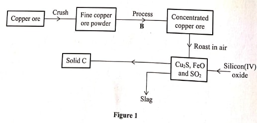
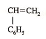
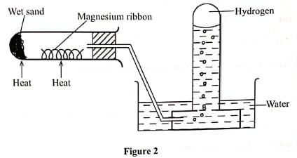
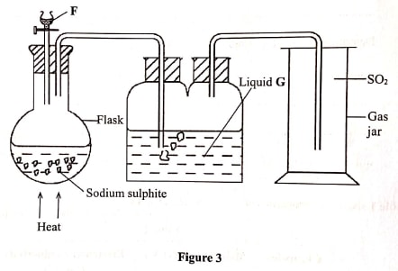
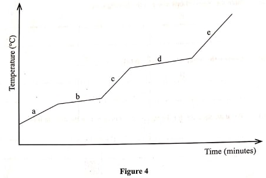
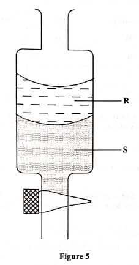

Chemistry
KCSE Paper 1 (2019)
INSTRUCTIONS
Answer all the questions
- An atom of element A has mass number 39 and 19 protons. (1 mark)
- Write the electron arrangement of the atom.
- State the period and group to which element A belongs. (1 mark)
Group ........... (½ mark)
Period............ (½ mark) - State whether the element is a metal or a non-metal.
- Describe how an increase in concentration increases the rate of a reaction. (2 marks)
- The flow chart in Figure 1 represents some stages in the extraction of copper metal. Study it
and answer the questions that follow.

- Identify:
- the copper ore ....... (1 mark)
- process B............... (½ mark)
- solid...................... (½ mark)
- Write an equation for the reaction that forms the slag. (1 mark)
- Identify:
- A monomer has the following structure.

- Draw the structure of its polymer that contains three monomers. (1 mark)
- A sample of the polymer formed from the monomer has a molecular mass of 4992. Determine the number of monomers that formed the polymer (C=12; H=1.0). (2 marks)
- Hydrogen gas can be prepared by passing steam over heated magnesium ribbon as shown in Figure
2.

- Write an equation for the reaction that produces hydrogen gas. (1 mark)
- Explain why the delivery tube must be removed from beneath the water before heating is stopped. (1 mark)
- Explain why sodium metal is not suitable for this experiment. (1 mark)
- A farmer intended to plant cabbages in his farm. He first tested the pH of the soil and found it to be 3.0. If cabbages do well in alkaline soils, explain the advice that would be given to the farmer in order to realise a high yield. (2 marks)
- A solution contains 40.3 g of substance XOH per litre. 25.0cm of of this solution required
30.0 cm3 of 0.3 M sulphuric(VI) acid for complete neutralisation.
- Calculate the number of moles of XOH that reacted. (½ mark)
- Determine the relative atomic mass of X. (1½ mark)
- Table 1 shows the properties of two chlorides, D and E.
Chlorides Melting Points (oC) Electrical conductivity (liquid) D 1074 Good E 203 Poor - State the type of bond present in:
- D .......... (1 mark)
- E............ (1 mark)
- Explain in terms of structure and bonding the difference in electrical conductivity of the chlorides D and E. (1 mark)
- State the type of bond present in:
- Sulphur(IV) oxide is prepared in the laboratory using the set-up in Figure 3. Study it and
answer the questions that follow.
>
- Identify substance F. (1 mark)
- Write an equation for the reaction that takes place in the flask. (1 mark)
- State the purpose of liquid G. (1 mark)
- The graph in Figure 4 was obtained when a certain substance was heated and its temperature
recorded at regular intervals.

- State the purity of the substance. (1 mark)
- Explain the answer in (a). (2 marks)
- Ethene is prepared in the laboratory by dehydration of ethanol.
- Name a suitable dehydrating agent used in this process. (1 mark)
- State the condition necessary for the reaction to occur. (1 mark)
- Write an equation for the dehydration process. (1 mark)
- A boiling tube filled with chlorine water was inverted in a trough containing the same solution
and the set-up left in sunlight for about 2 hours. (1 mark)
- State the observations made in the boiling tube. (1 mark)
- Explain the observations made in (a). (1 mark)
- Write an equation for the reaction that occurred in the boiling tube. (1 mark)
- 5g of calcium carbonate was strongly heated to a constant mass. Calculate the mass of the solid residue formed (Ca=40.0; C = 12.0, 0 = 16.0). (2 marks
- During laboratory preparation of oxygen, manganese(IV) oxide is added to reagent H.
- Name reagent H. (1 mark)
- State the role of manganese(IV) oxide in this experiment. (1 mark)
- Write the equation for the reaction that takes place. (1 mark)
- Figure 5 shows an apparatus used to separate a mixture of water and hexene.

- Name the apparatus in Figure 5. (1 mark)
- State the principle by which the mixture of the two liquids is separated. (1 mark)
- Identify the liquids, R and Sif the density of hexene is 0.66 g/cm?
- R.......... (½ mark)
- S.......... (½ mark)
-
- Complete the following table. (2 marks)
Solution pH Nature of solution H 1.0 I Neutral J Weak acid K 13.0 - Explain why a solution of ammonia in methylbenzene has no effects on red litmus paper while in aqueous ammonia red litmus paper turns blue. (1 mark)
- Complete the following table. (2 marks)
- The heat of solution and hydration energy of potassium chloride is -17.2 kJ and -689kJ respectively. Calculate the lattice energy of potassium chloride. (2 marks)
- Use the information in Table 2 to answer the questions that follow.
Table 2
Bond Bond energy (kJ mol-1) C - H 412 Cl - Cl 242 C - Cl 338 H - Cl 431 - State what is meant by heat of reaction. (1 mark)
- Calculate the heat change when one mole of methane reacts completely with excess chlorine in the presence of UV light. (2 marks)
- Given that the E of Cu(s)/Cu2+(aq) is + 0.34 V and that of Zn (s)/Zn2+(aq) is - 0.76V, draw a labelled diagram of zinc and copper electrochemical cell. (3 marks)
- During laboratory preparation of carbon(IV) oxide gas, dilute hydrochion substance L in a
conical flask.
- Identify substance L. (1 mark)
- Write an equation that produces carbon(IV) oxide. (1 mark)
- State the observations made when the gas produced was bubbled through calcium hydroxide solution for a long time. (1 mark)
- Study the information in Table 3 and use it to answer the questions that
follow
Table 3
Elements Na Mg Al Si P S Cl Atomic numbers 11 12 13 14 15 16 17 Atomic radii(nm) 0.157 0.136 0.125 0.117 0.110 0.104 0.099
- Explain the trend in atomic radii from sodium to chlorine. (1 mark)
- Explain how the chloride of aluminium differs from those of other metals in the period. (2 marks)
- The diagram in Figure 6 shows radiations cmitted by a radioactive sample

- Identify radiations:
- M......... (1 mark)
- N......... (1 mark)
- Explain what would happen when a sheet of paper is placed in the path of the two radiations (1 mark)
- Identify radiations:
- 168X and 188 X are isotopes of element X. They occur naturally in the ratio of 9:1 respectively. Calculate the relative atomic mass of element X. (2 marks)
- Starting with copper turnings, describe how a sample of copper(II) sulphate crystals can be prepared in the laboratory. (3 marks)
- Chemical tests were carried out on separate samples of water drawn from the same source. The
observations made were recorded as shown in Table 4.
Table 4
State the inferences made in reactions:Test Observation (i) Addition of aqueous calcium choride No white precipitate (ii) Addition of dilute sulphuric acid No effervescence, colourless solution (iii) Addition of few drops of acidified barium nitrate No white precipitate (iv) Addition of aqueous ammonia White precipitate dissolves - ......................(1 mark)
- ......................(1 mark)
- ..................... (1 mark)
- 140 cm3 of nitrogen gas diffuses through a membrane in 70 seconds. How long will it take 200 cm of carbon(IV) oxide gas to diffuse through the same membrane under the same conditions of temperature and pressure. (3 marks)
- When burning magnesium ribbon is introduced into a gas jar full of nitrogen, it continues to
burn producing a greenish yellow powder.
- Write an equation for the reaction between nitrogen and magnesium. (1 mark)
- Explain why magnesium continues to burn in nitrogen but sulphur does not. (2 marks)
- State one use of nitrogen (1 mark)
- Draw in the space provided a labelled diagram of the set-up of the apparatus that can be used to electrolyse molten lead(11) bromide. (3 marks)
- Name an appropriate apparatus that is used to prepare standard solutions in the laboratory (1 mark)

Marking Scheme
- An atom of element A has mass number 39 and 19 protons. (1 mark)
- Write the electron arrangement of the atom.
- 2.8.8.1/2,8,8,1/2-8-8-1
- State the period and group to which element A belongs. (1 mark)
- Group .... one/1/I(½ mark)
- Period .....four/4/IV (½ mark)
- State whether the element is a metal or a non-metal.
- metal
- Write the electron arrangement of the atom.
- Describe how an increase in concentration increases the rate of a reaction. (2 marks)
- As the concentration increases the number of reactivity of particles per unit volume increases thus affecting collisions. This leads to increase in the rate of reaction
- The flow chart in Figure 1 represents some stages in the extraction of copper metal. Study it
and answer the questions that follow.
- Identify:
- the copper ore ....... copper pyrites/CuFeS2 (1 mark)
- process B...............froth floatation (½ mark)
- solid...................... copper(I)sulphide(Cu2S)(½ mark)
- Write an equation for the reaction that forms the slag. (1 mark)
- FeO(s) + SiO2(s) → FeSiO3(l)
- Identify:
- A monomer has the following structure.

- Draw the structure of its polymer that contains three monomers. (1 mark)

- A sample of the polymer formed from the monomer has a molecular mass of 4992. Determine
the number of monomers that formed the polymer (C=12; H=1.0). (2 marks)

- Draw the structure of its polymer that contains three monomers. (1 mark)
- Hydrogen gas can be prepared by passing steam over heated magnesium ribbon as shown in Figure
2.
- Write an equation for the reaction that produces hydrogen gas. (1 mark)
- Mg(s) + H2O → MgO(s) + H2(g)
- Explain why the delivery tube must be removed from beneath the water before heating is
stopped. (1 mark)
- To prevent suck-back of water which would crack the boiling tube
- Explain why sodium metal is not suitable for this experiment. (1 mark)
- Sodium is very reactive hence reacts explosively with steam
- Write an equation for the reaction that produces hydrogen gas. (1 mark)
- A farmer intended to plant cabbages in his farm. He first tested the pH of the soil and found it
to be 3.0. If cabbages do well in alkaline soils, explain the advice that would be given to the
farmer in order to realise a high yield. (2 marks)
- Add calcium oxide/lime to rraise the soil pH. Calcium oxide is a basic oxide hence dissolves in water in the soilto form alkaline solution that reacts with acidic soil raising the soil pH
- A solution contains 40.3 g of substance XOH per litre. 25.0cm of of this solution required
30.0 cm3 of 0.3 M sulphuric(VI) acid for complete neutralisation.
- Calculate the number of moles of XOH that reacted. (½ mark)

- Determine the relative atomic mass of X. (1½ mark)

- Calculate the number of moles of XOH that reacted. (½ mark)
- Table 1 shows the properties of two chlorides, D and E.
Chlorides Melting Points (oC) Electrical conductivity (liquid) D 1074 Good E 203 Poor - State the type of bond present in:
- D ..........Ionic/electrovalent (1 mark)
- E............Covalent/van der waals forces (1 mark)
- Explain in terms of structure and bonding the difference in electrical conductivity of
the chlorides D and E. (1 mark)
- D, giant ionic; when in molten state the ions are mobile hence conducts electric current. E is giant molecular and therefore does not have mobile ions
- State the type of bond present in:
- Sulphur(IV) oxide is prepared in the laboratory using the set-up in Figure 3. Study it and
answer the questions that follow.
- Identify substance F. (1 mark)
- HCl/Dilute hydrochloric acid/Dilute HCl acid
- Dilute Sulphuric (IV) acid/Dilute H2SO4
- Write an equation for the reaction that takes place in the flask. (1 mark)
- Na2SO3(s) + 2HCl(aq) → SO2(g) + NaCl(aq) + H2O(l)
- Na2SO3(s) + H2SO4(aq) → Na2SO4(aq) + H2O(l) + SO2(g)
- State the purpose of liquid G. (1 mark)
- To dry the gas
- Identify substance F. (1 mark)
- The graph in Figure 4 was obtained when a certain substance was heated and its temperature
recorded at regular intervals.
- State the purity of the substance. (1 mark)
- impure
- Explain the answer in (a). (2 marks)
- The substance does not have a sharp M.P or B.P
- State the purity of the substance. (1 mark)
- Ethene is prepared in the laboratory by dehydration of ethanol.
- Name a suitable dehydrating agent used in this process. (1 mark)
- Concentrated sulphuric (IV) acid Rej. dilute/H2SO4(aq) acc. H2SO4(l)
- State the condition necessary for the reaction to occur. (1 mark)
- Temperature 160oC - 180oC
- Write an equation for the dehydration process. (1 mark)

- Name a suitable dehydrating agent used in this process. (1 mark)
- A boiling tube filled with chlorine water was inverted in a trough containing the same solution
and the set-up left in sunlight for about 2 hours. (1 mark)
- State the observations made in the boiling tube. (1 mark)
- The colour of the solution changed from yellow to colourless
- Colourless gas collected
- level of water drops in the tube
- Explain the observations made in (a). (1 mark)
- The sunlight decomposed Chloric (I) acid to oxygen and hydrchloric acid
- Write an equation for the reaction that occurred in the boiling tube. (1 mark)
- 2HOCl → 2HCl(aq) + O2(g)
- State the observations made in the boiling tube. (1 mark)
- 5g of calcium carbonate was strongly heated to a constant mass. Calculate the mass of the solid
residue formed (Ca=40.0; C = 12.0, 0 = 16.0). (2 marks)

- During laboratory preparation of oxygen, manganese(IV) oxide is added to reagent H.
- Name reagent H. (1 mark)
- Hydrogen peroxide
- State the role of manganese(IV) oxide in this experiment. (1 mark)
- To speed up the production of oxygen gas(catalyst)
- Write the equation for the reaction that takes place. (1 mark)
- 2H2O2(l) → 2H2O(l) + O2(g)
- Name reagent H. (1 mark)
- Figure 5 shows an apparatus used to separate a mixture of water and hexene.
- Name the apparatus in Figure 5. (1 mark)
- Separating funnel/dropping funnel
- State the principle by which the mixture of the two liquids is separated. (1 mark)
- immiscibility/different densities
- Identify the liquids, R and Sif the density of hexene is 0.66 g/cm3?
- R.......... Hexene/Hexane (½ mark)
- S.......... Water(½ mark)
- Name the apparatus in Figure 5. (1 mark)
-
- Complete the following table. (2 marks)
Solution pH Nature of solution H 1.0 Strong acid I 7.0 Neutral J 4.0 - 6.9 Weak acid K 13.0 Strong base - Explain why a solution of ammonia in methylbenzene has no effects on red litmus
paper while in aqueous ammonia red litmus paper turns blue. (1 mark)
- In methylbenzene it is molecular/does not dissociate while it ionizes in water to form ions
- Complete the following table. (2 marks)
- The heat of solution and hydration energy of potassium chloride is -17.2 kJ and -689kJ
respectively. Calculate the lattice energy of potassium chloride. (2 marks)

- Use the information in Table 2 to answer the questions that follow.
Table 2
Bond Bond energy (kJ mol-1) C - H 412 Cl - Cl 242 C - Cl 338 H - Cl 431 - State what is meant by heat of reaction. (1 mark)
- The amount of heat evolved or absorbed druring a chemical reaction between molar quantities of reactants
- Calculate the heat change when one mole of methane reacts completely with excess
chlorine in the presence of UV light. (2 marks)

- State what is meant by heat of reaction. (1 mark)
- Given that the E of Cu(s)/Cu2+(aq) is + 0.34 V and that of Zn
(s)/Zn2+(aq) is - 0.76V, draw a labelled diagram of zinc and copper
electrochemical cell. (3 marks)

- During laboratory preparation of carbon(IV) oxide gas, dilute hydrochion substance L in a
conical flask.
- Identify substance L. (1 mark)
- calcium carbonate/CaCO3/marble chips
- Write an equation that produces carbon(IV) oxide. (1 mark)
- CaCo3(s) + HCl(aq) → CaCl2(aq) + H2O(l) + CO2(g)
- State the observations made when the gas produced was bubbled through calcium hydroxide
solution for a long time. (1 mark)
- White precipitate formed dissolves in excess to form a colourless solution
- Identify substance L. (1 mark)
- Study the information in Table 3 and use it to answer the questions that
follow
Table 3
Elements Na Mg Al Si P S Cl Atomic numbers 11 12 13 14 15 16 17 Atomic radii(nm) 0.157 0.136 0.125 0.117 0.110 0.104 0.099 - Explain the trend in atomic radii from sodium to chlorine. (1 mark)
- Atomic radii decreases across the period
- Across the period the number of protons increases/increasing the nuclear attraction for the outermost electron contributing to decrease in atomic radii
- Explain how the chloride of aluminium differs from those of other metals in the
period. (2 marks)
- AlCl3 is molecular/it differs from othermetal chlorides because it exists as a dimer. Two molecules of AlCl3 pair through coordinate bonds while the other metal chlorides are ionic
- Explain the trend in atomic radii from sodium to chlorine. (1 mark)
- The diagram in Figure 6 shows radiations cmitted by a radioactive sample
- Identify radiations:
- M......... Alpha (α)(1 mark)
- N......... Beta (β)(1 mark)
- Explain what would happen when a sheet of paper is placed in the path of the two
radiations (1 mark)
- The alpha particles will be stopped while beta (β) particles will penetrate the sheet of paper
- Identify radiations:
- 168X and 188 X are isotopes of element X.
They occur naturally in the ratio of 9:1 respectively. Calculate the relative atomic mass of
element X. (2 marks)
- RAM = (9/10 × 16) + (1/10 ×
18)
=14.4 + 1.8
= 16.2
- RAM = (9/10 × 16) + (1/10 ×
18)
- Starting with copper turnings, describe how a sample of copper(II) sulphate crystals can
be prepared in the laboratory. (3 marks)
- Heat copper turnings in air to form copper (II) oxide. Add dilute sulphuric (VI) acid. Filter to obtain copper (II) sulphate solution. Heat to saturation and allow to cool for crystals to form. Dry between filter papers
- Chemical tests were carried out on separate samples of water drawn from the same source. The
observations made were recorded as shown in Table 4.
Table 4
State the inferences made in reactions:Test Observation (i) Addition of aqueous calcium choride No white precipitate (ii) Addition of dilute sulphuric acid No effervescence, colourless solution (iii) Addition of few drops of acidified barium nitrate No white precipitate (iv) Addition of aqueous ammonia White precipitate dissolves - ......................Pb2+, Ag+, SO42-, CO32- absent(1 mark)
- ...................... CO32-, SO32-, HCO3-, absent(1 mark)
- ..................... SO42-(1 mark)
- 140 cm3 of nitrogen gas diffuses through a membrane in 70 seconds. How long will
it take 200 cm of carbon(IV) oxide gas to diffuse through the same membrane under the same
conditions of temperature and pressure. (3 marks)

- When burning magnesium ribbon is introduced into a gas jar full of nitrogen, it continues to
burn producing a greenish yellow powder.
- Write an equation for the reaction between nitrogen and magnesium. (1 mark)
- 3Mg(s) + N2(g) → Mg3N2(s) not balanced - 0 mark; state symbol-penalize ½
- Explain why magnesium continues to burn in nitrogen but sulphur does not. (2 marks)
- Burning magnesium produces a lot of heat that is enough to break N-N triple bond hence it reacts with it while burning of sulphur produce little heat not enough to break N-N triple bond
- State one use of nitrogen (1 mark)
- In refrgeration e.g. storage of semen
- Manufacture of ammonia/haber process
- In light bulbs
- Write an equation for the reaction between nitrogen and magnesium. (1 mark)
- Draw in the space provided a labelled diagram of the set-up of the apparatus that can be used to
electrolyse molten lead(11) bromide. (3 marks)

- Name an appropriate apparatus that is used to prepare standard solutions in the
laboratory (1 mark)
- volumetric flask